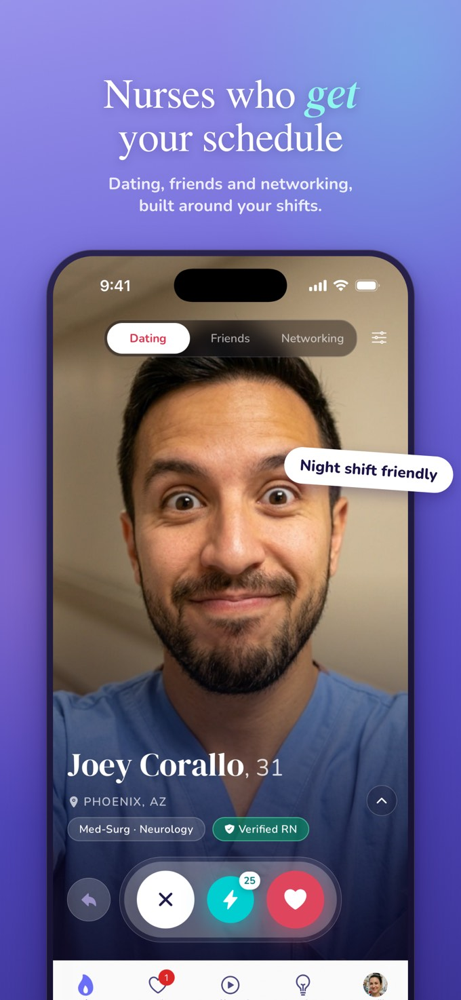
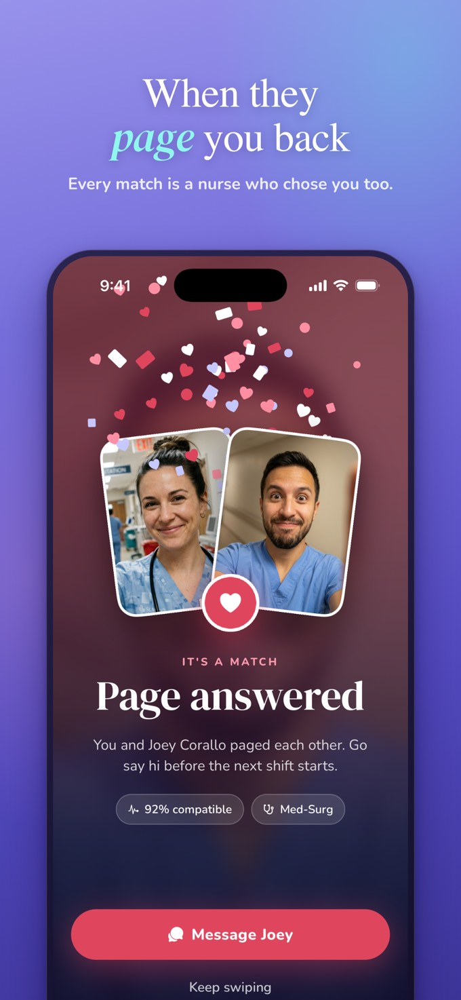
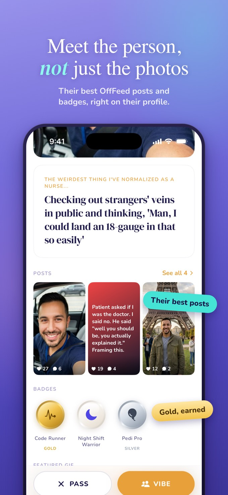
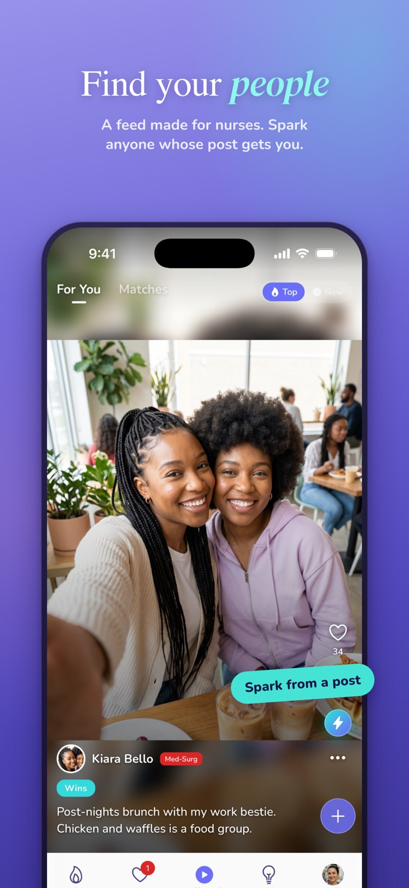
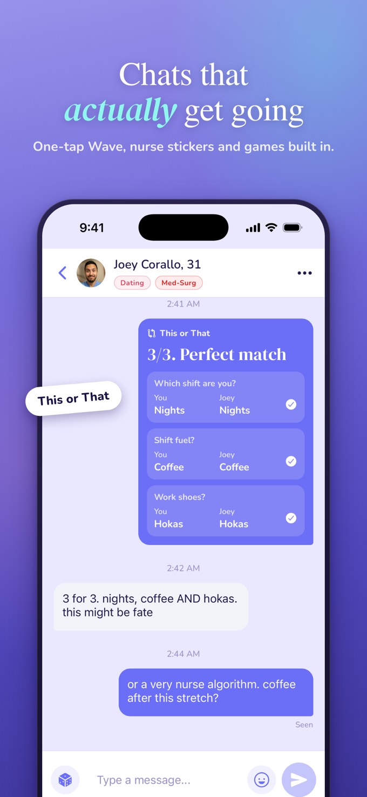
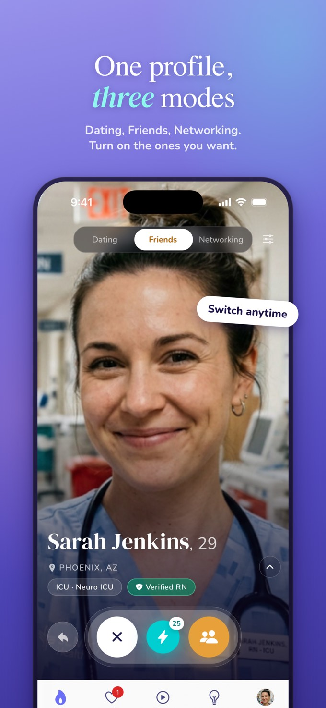
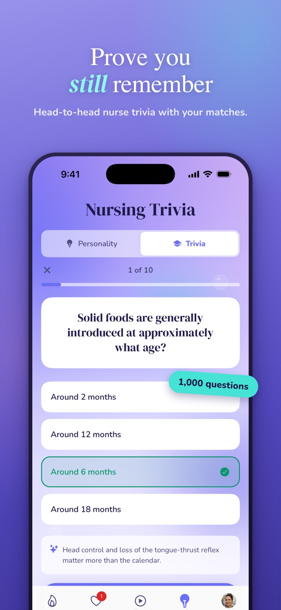

The app built for nurses
Your work bestie can't be your only personality trait.
Dating · Friends · Networking · OffFeed — one app, built exclusively for nurses.
The app built for nurses
Dating · Friends · Networking · OffFeed — one app, built exclusively for nurses.
Four Ways to Connect
Everything the 12-hour life demands.
OffFeed
Your nursing feed. Memes, wins and real talk, under your name or anonymously. No patients, no managers.
Dating
Find someone who won't guilt-trip you for sleeping until 3 PM after a night shift.
Friends
New city, new contract? Find nurses near you before your first shift even starts.
Networking
Show your certs, share your specialty, find mentors who've been in the trenches.
See It in Action







Free to download. Built for nurses.
 Download for iPhone
Download for iPhone
 Get it on Google Play
Get it on Google Play
 Download for iPhone
Download for iPhone
 Get it on Google Play
Get it on Google Play